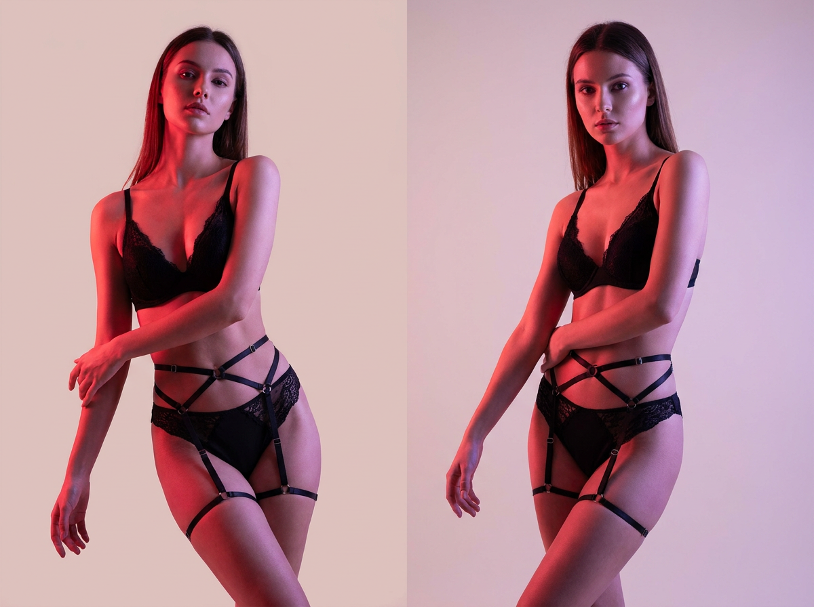
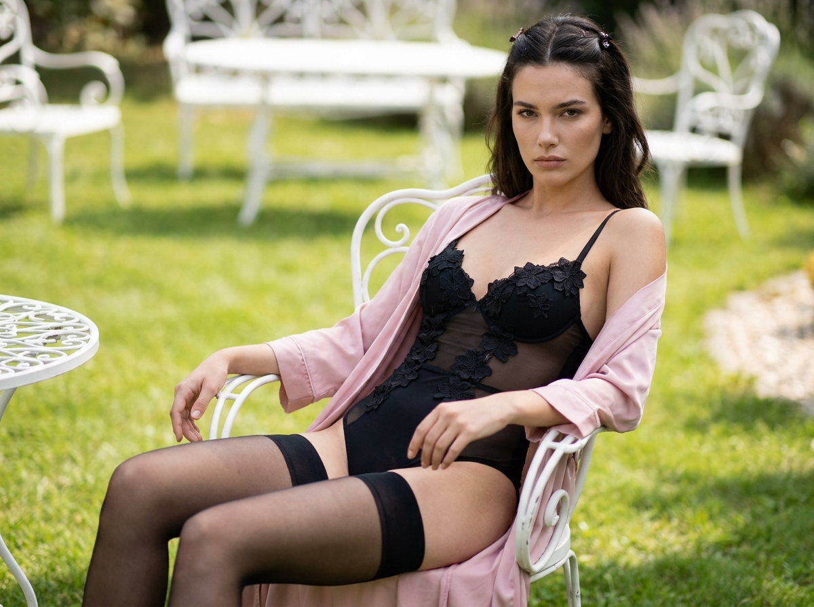
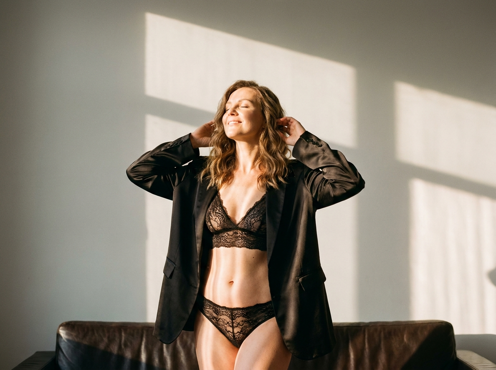
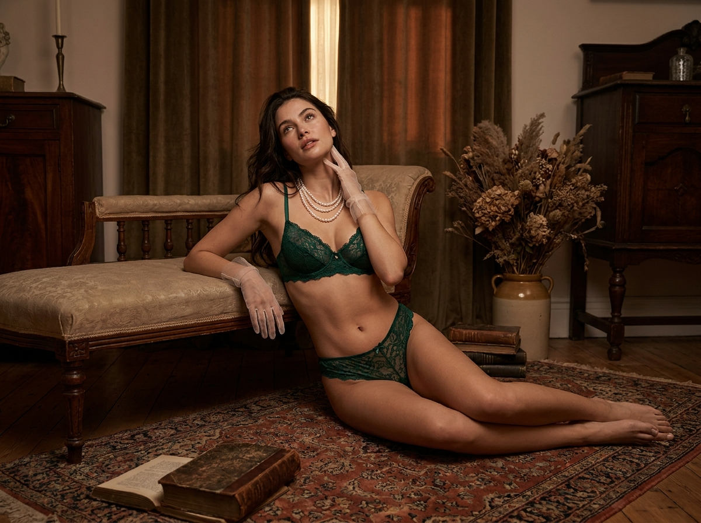
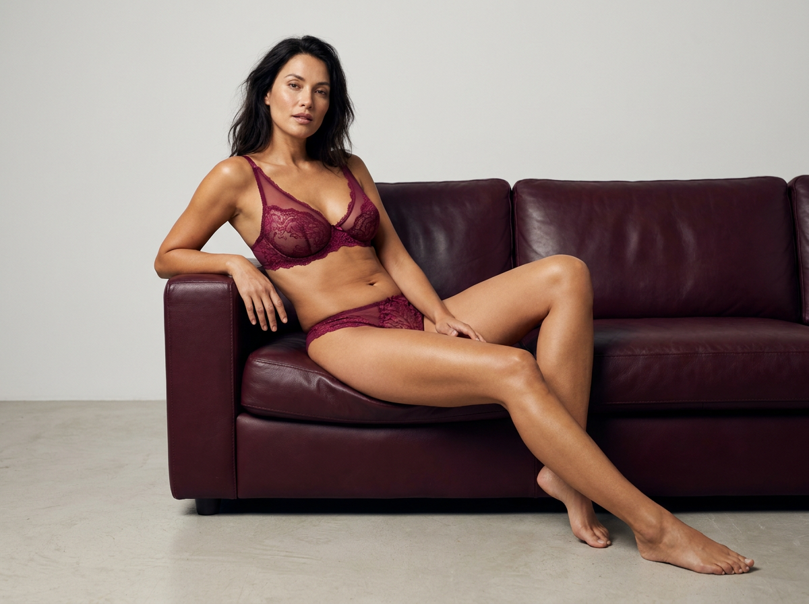
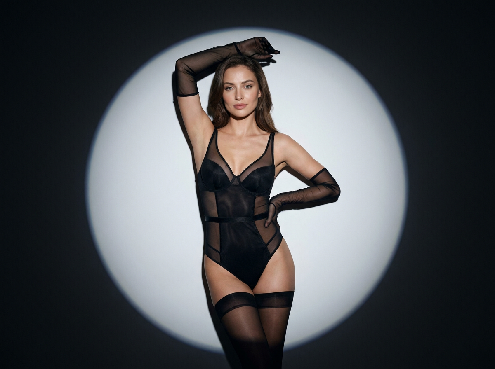
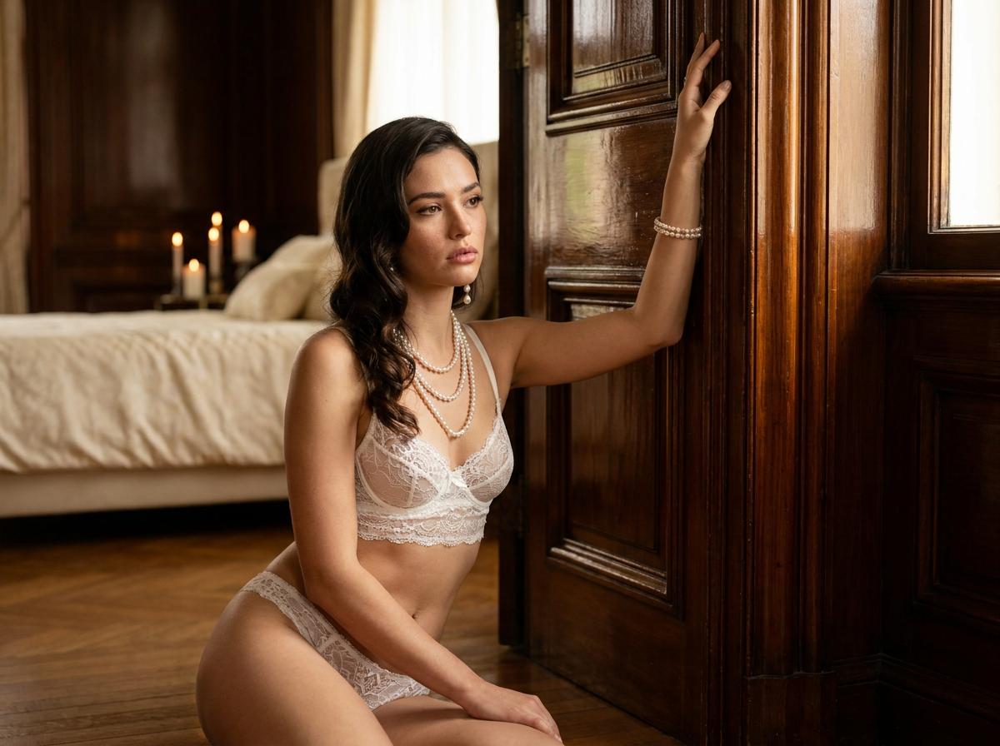
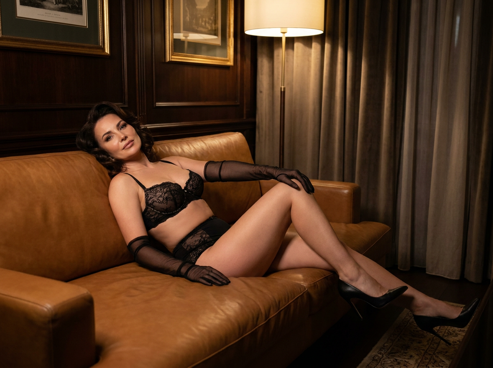
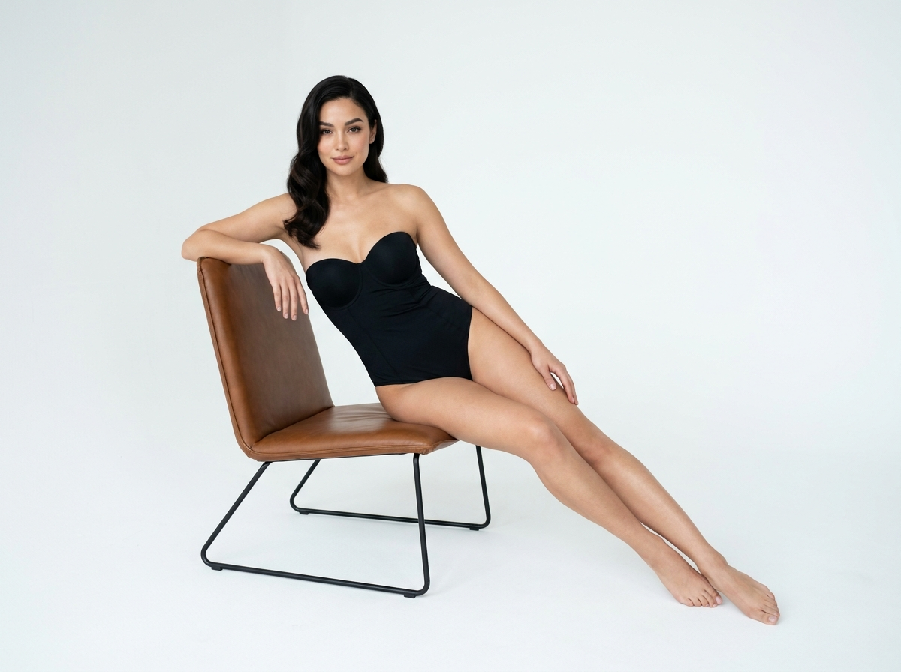
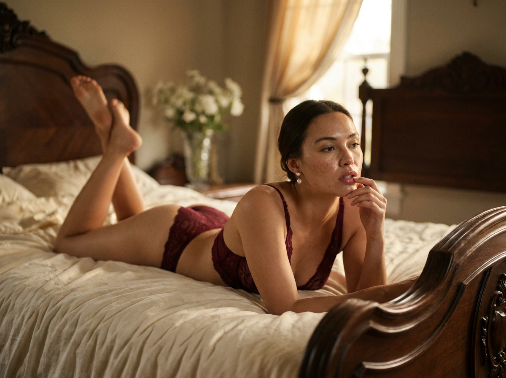

ИИ-фото без цензуры: 10 промптов для нейросети

Обычный запрос вроде «сделай красивое фото в белье» часто даёт случайную позу, пластиковую кожу и лицо, которое совсем не похоже на референс. Грамотно собранный промпт задаёт нейросети не только одежду, но и работу света, композицию, фактуру интерьера и настроение кадра.
В подборке - 10 сценариев для чувственной fashion-съёмки: от неоновой студии и тёмного spotlight до кожаных диванов, старинных дверей и винтажной спальни. Все идеи рассчитаны на взрослый образ без откровенной демонстрации тела и с акцентом на журнальную эстетику.
Как сгенерировать такое фото: пошагово
Нужен снимок анфас при ровном свете, лицо в кадре целиком, без тёмных очков и головных уборов. Разрешение от 1000 пикселей по короткой стороне. Чем чётче исходник, тем точнее модель повторит черты.
Выберите сценарий ниже и нажмите «Копировать» - текст уйдёт в буфер целиком, вместе с командой сохранения внешности. Эта команда стоит первой строкой и отвечает за то, чтобы на выходе было ваше лицо, а не случайное.
Кнопка «Сгенерировать» рядом с каждым промптом открывает модель в новой вкладке. Nano Banana Pro работает с референсом лица - в отличие от моделей, которые генерируют портрет с нуля и узнаваемость теряют.
Промпт - в поле ввода, портрет - через загрузку референса. Порядок значения не имеет, но без референса команда сохранения внешности работать не будет: модели нечего сохранять.
Для сторис и ленты берите 9:16, для превью и обложек - 4:3. Первый результат редко идеален: если поза или свет ушли не туда, поправьте соответствующую часть промпта и запустите заново. Обычно хватает двух-трёх итераций.
10 промптов для генерации
1. Неоновая студийная съёмка
Строго сохранить внешность по загруженному референсу: черты лица, пропорции, мимику и текстуру кожи без изменений. Фотореалистичная вертикальная fashion-фотография в полный рост, модель стоит строго по центру минималистичной студии. На ней чёрный лаконичный кружевной бюстгальтер, высокие чёрные трусики и декоративная harness-система из тонких ремней, проходящих вокруг талии, бёдер и ног. Добавь аккуратные металлические кольца, крепления и тонкие бретели; геометрия ремней должна подчёркивать силуэт, но выглядеть как дизайнерская деталь образа. Фон ровный, светло-бежево-розовый, без декора. Слева и спереди направь насыщенный красно-розовый источник, справа добавь мягкий пурпурный заполняющий свет. Нужны цветные блики на коже и ткани, гладкие тени, градиентное свечение и настроение глянцевого fashion-редакционного журнала. Корпус слегка вытянут вверх, руки образуют динамичную S-образную линию. Съёмка на 85 мм, f/4, высокая детализация кожи, вертикальный кадр 4:5.
2. Белое кресло в саду

Строго сохранить внешность по загруженному референсу: черты лица, пропорции, мимику и текстуру кожи без изменений. Создай фотореалистичный вертикальный fashion-кадр взрослой женщины с лицом, точно совпадающим с загруженным референсом: сохрани форму лица, глаза, брови, нос, губы, скулы, подбородок, линию роста волос, тон кожи, возрастные особенности и индивидуальную мимику. Она сидит в белом садовом кресле или на белом кованом стуле. Поза расслабленная, уверенная и артистичная: одна нога вытянута вперёд, вторая согнута или свободно отведена в сторону, корпус немного отклонён назад, плечи расправлены. Взгляд прямо в объектив либо чуть ниже него, выражение холодное, соблазнительное, но элегантное. Снимай как дорогую luxury fashion-кампанию: чистая композиция, мягкий студийный свет, естественная кожа, аккуратная ретушь, вертикальный формат 4:5, объектив 85 мм, диафрагма f/2.8.
3. Тёплая съёмка в квартире

Строго сохранить внешность по загруженному референсу: черты лица, пропорции, мимику и текстуру кожи без изменений. Фотореалистичная вертикальная fashion-editorial фотография взрослой женщины в стильной современной квартире. Используй загруженный портрет как референс лица и тела, сохрани узнаваемость, пропорции, возраст, тон кожи, форму глаз, носа, губ, бровей и подбородка. Интерьер минималистичный: гладкая нейтрально-серая стена, мягкие геометрические тени от окна, в нижней части кадра виден фрагмент тёмно-коричневого кожаного дивана. Женщина стоит расслабленно и уверенно, корпус слегка развёрнут, плечи свободны, поза выглядит естественно и дорого. Образ - эстетичная luxury lingerie campaign с чувственным настроением без вульгарности. Свет тёплый, направленный сбоку, с мягким заполнением и деликатным контуром по волосам. Убери лишние предметы, визуальный шум и чрезмерную ретушь. Съёмка на 50 мм, f/3.2, вертикальный кадр 4:5, высокая детализация ткани и кожи.
4. Винтажная гостиная

Строго сохранить внешность по загруженному референсу: черты лица, пропорции, мимику и текстуру кожи без изменений. Сделай фотореалистичную вертикальную fashion-editorial сцену в старинном доме или винтажной гостиной. Лицо модели должно оставаться полностью узнаваемым по загруженному референсу: натуральные пропорции, мимика, глаза, брови, нос, губы, скулы, подбородок, линия волос и оттенок кожи без подмены или пластиковой ретуши. Взрослая женщина сидит на полу рядом с низкой антикварной кушеткой, диваном или банкеткой. Она мягко опирается на мебель локтем или боком корпуса; другая рука касается лица либо шеи. Ноги вытянуты по полу и образуют длинную элегантную линию. Корпус немного повёрнут к камере, лицо поднято, взгляд направлен чуть вверх, выражение мечтательное и спокойное. Используй тёплый оконный свет, глубокие мягкие тени, фактуру дерева и ткани, приглушённую палитру. Объектив 50 мм, f/2.8, вертикальный формат 4:5, журнальная цветокоррекция.
5. Диван в студийном свете

Строго сохранить внешность по загруженному референсу: черты лица, пропорции, мимику и текстуру кожи без изменений. Фотореалистичная вертикальная студийная съёмка в духе luxury lingerie editorial. Взрослая женщина сидит на тёмном кожаном диване глубокого коричнево-бордового оттенка. Сохрани лицо, фигуру, возраст, пропорции и общую узнаваемость по загруженному фото; черты должны выглядеть натурально, без эффекта AI-куклы и чрезмерного сглаживания. Волосы слегка растрёпаны, но уложены так, будто модель только что закончила fashion-съёмку. Поза расслабленная и уверенная, корпус немного откинут назад, ноги расположены выразительно, но естественно. Фон предельно простой: гладкая светло-серая или холодно-белая стена, светлый бетонный пол, никаких картин, растений и лишних предметов. Используй большой мягкий источник слева, лёгкий контровой свет по волосам и деликатную тень под диваном. Передай фактуру кожи и лака на мебели. Съёмка на 85 мм, f/4, вертикальный кадр 4:5.
6. Круг света в темноте

Строго сохранить внешность по загруженному референсу: черты лица, пропорции, мимику и текстуру кожи без изменений. Создай фотореалистичный вертикальный high-fashion boudoir-портрет взрослой женщины в затемнённой студии. Лицо точно повторяет загруженный референс: сохрани глаза, брови, нос, губы, скулы, подбородок, линию роста волос, оттенок кожи, возрастные особенности и естественную мимику. Модель находится в центре большого круглого светового пятна на тёмном фоне. Композиция напоминает dark editorial и студийный spotlight portrait, но остаётся fashion-ориентированной, без откровенной демонстрации тела. Одна рука поднята над головой, локоть согнут; вторая свободно опущена вдоль корпуса или мягко касается бедра. Поза уверенная, вытянутая и изящная. Свет жёсткий, направленный сверху и спереди, с плавным спадом в темноту; кожа выглядит натурально, тени графичные, фон почти чёрный. Объектив 85 мм, f/2.8, вертикальный формат 4:5, высокая детализация.
7. У старинной деревянной двери

Строго сохранить внешность по загруженному референсу: черты лица, пропорции, мимику и текстуру кожи без изменений. Фотореалистичная вертикальная fashion-editorial boudoir-сцена у высокой старинной деревянной двери или панели. Поверхность дерева насыщенная, тёплая, красно-коричневая, с лакированным блеском и заметной фактурой. Взрослая женщина сидит на полу или низкой поверхности, слегка разворачивая тело к камере. Спина мягко опирается на дверной косяк, одна рука поднята вверх и вытянута вдоль двери, словно касается верхней части проёма; вторая спокойно лежит на колене или опущена. Поза естественная, женственная, расслабленная и немного мечтательная. Сохрани лицо по загруженному референсу: форму глаз, бровей, носа, губ, скул, подбородка, линию волос, оттенок кожи и индивидуальную мимику. Используй тёплый боковой свет, мягкую тень на дереве и аккуратный контур по плечам. Настроение - дорогая журнальная съёмка без пошлости. Объектив 50 мм, f/2.8, вертикальный кадр 4:5.
8. Карамельный кожаный диван

Строго сохранить внешность по загруженному референсу: черты лица, пропорции, мимику и текстуру кожи без изменений. Сделай фотореалистичную вертикальную fashion/boudoir-фотографию взрослой женщины в роскошном классическом интерьере. Она сидит на большом тёпло-коричневом кожаном диване глубокого карамельного оттенка. Поза расслабленная и уверенная: корпус слегка отклонён назад, одна нога перекинута через другую, линии бёдер и ног подчёркнуты естественным положением тела. Одна рука лежит на диване или заведена за спину, вторая поднята к шее либо щеке, создавая томный, но сдержанный жест. Лицо и пропорции модели должны максимально совпадать с загруженным референсом; не меняй возраст, тон кожи, форму глаз, носа, губ, бровей и подбородка. Интерьер классический, тёплый, без визуального шума, с мягкими тенями и дорогой фактурой кожи. Добавь свет из большого окна сбоку, лёгкий золотистый контровой ободок и естественную ретушь. Съёмка на 85 мм, f/3.5, вертикальный формат 4:5.
9. Белая студия и кресло

Строго сохранить внешность по загруженному референсу: черты лица, пропорции, мимику и текстуру кожи без изменений. Создай чистый фотореалистичный high-end studio-fashion кадр в белой студии. На фоне - бесшовная светлая cyclorama без мебели, окон, декора и фактуры стен. В композиции стоит современное дизайнерское lounge-кресло с коричневой кожаной обивкой; взрослая женщина позирует рядом с ним или сидит на его краю в уверенной элегантной манере. Главный акцент - на точной передаче лица из загруженного референса: сохрани форму глаз, бровей, носа, губ, скул, подбородка, линию роста волос, оттенок кожи и натуральную мимику. Кожа реалистичная, без чрезмерного блюра и эффекта пластика. Свет мягкий студийный, почти белый, с лёгкой тенью под креслом и тонким контуром по силуэту. Цвета нейтральные, композиция минималистичная, настроение - дорогая журнальная съёмка. Используй объектив 70 мм, f/4, вертикальный формат 4:5, разрешение 2048×2560.
10. Винтажная спальня

Строго сохранить внешность по загруженному референсу: черты лица, пропорции, мимику и текстуру кожи без изменений. Фотореалистичная вертикальная high-end boudoir-фотография взрослой женщины на большой винтажной кровати в красивой спальне. Она лежит на животе или в полуобороте, опираясь на локти и предплечья; верхняя часть тела слегка приподнята над матрасом. Одна рука поднята к лицу, указательный палец мягко касается губ или находится рядом с ними, создавая игривый, задумчивый жест. Взгляд направлен немного вверх и в сторону, выражение мечтательное, мягкое и уверенное. Сохрани полную узнаваемость лица по референсу: форму глаз, бровей, носа, губ, скул, подбородка, линию волос, оттенок кожи и естественные пропорции. Спальня с винтажной кроватью, фактурным постельным бельём и тёплой приглушённой палитрой; никаких лишних предметов и вульгарных деталей. Свет мягкий, рассеянный, будто из окна справа, с деликатными тенями на ткани. Объектив 50 мм, f/2.8, вертикальный кадр 4:5.
Что важно учесть в этом стиле
Boudoir и lingerie-съёмка держатся не на количестве открытой кожи, а на свете, позе и фактуре. Один выразительный источник часто работает лучше, чем равномерная подсветка всей сцены: он создаёт объём на лице, подчёркивает ткань и оставляет фон спокойным.
Для сходства с референсом полезно отдельно описывать лицо и запрещать чрезмерную ретушь. Если модель начинает менять черты, лучше уменьшить стилизацию, убрать слова вроде «идеальная внешность» и закрепить возраст, мимику, пропорции и натуральную текстуру кожи.
Идеи для вариаций
- Замените цветной свет на холодный лунный или янтарный свет от окна.
- Перенесите сцену из студии в гостиничный номер с панорамными шторами.
- Добавьте шёлковый халат, длинные перчатки или строгий жакет поверх белья.
- Попробуйте чёрно-белую обработку с выраженным зерном плёнки.
- Смените объектив 85 мм на 35 мм для более заметного пространства вокруг модели.
- Попросите нейросеть сделать серию из пяти кадров с одной локацией и разными положениями рук.
Как собрать свой промпт
Начните с формата: укажите вертикальный кадр, тип съёмки и возраст модели. Затем опишите локацию, одежду, положение тела, взгляд и жесты. После этого задайте свет - его направление, цвет, жёсткость и тени. В конце добавьте объектив, диафрагму, соотношение сторон и ограничения по ретуши.
Один запрос лучше посвящать одной сцене. Для серии сохраните неизменными референс, объектив, фон и свет, а меняйте только позу или деталь образа. Если результат нестабилен, сделайте 4–8 генераций, выберите удачную композицию и используйте её как основу для следующего прохода.
Ошибки, из-за которых кадр не получается
- Слишком общий запрос. Фраза «красивое фото в белье» не объясняет позу, свет и окружение.
- Противоречивые указания. Одновременно «жёсткий контраст» и «равномерный мягкий свет» запутают модель.
- Перегруженный фон. Мебель, декор и окна перетягивают внимание с лица и силуэта.
- Избыточная ретушь. Слова «идеальная кожа» часто превращают лицо в пластиковую маску.
- Неправильный ракурс. Широкоугольный объектив в тесной сцене может исказить ноги, руки и пропорции.
- Слишком откровенная формулировка. Нейтральное описание fashion-позы обычно даёт более эстетичный и управляемый результат.
Частые вопросы
Как сделать такое ИИ-фото бесплатно?
Попробуйте Kandinsky или Шедеврум: они подходят для текстовых сцен, но точное сохранение лица по референсу и сложные позы могут работать нестабильно. Krea AI и Arena.ai удобны для экспериментов и сравнения вариантов, однако доступные функции, лимиты и правила использования меняются. Для чужих фотографий обязательно получите согласие, а откровенные сцены создавайте только с взрослыми людьми.
Почему нейросеть меняет лицо на каждом кадре?
Одного указания «сохранить сходство» часто недостаточно. Используйте качественный портрет без фильтров, описывайте ключевые черты, не меняйте одновременно возраст и причёску, а для серии фиксируйте один референс и одинаковые параметры. В некоторых моделях нужна отдельная функция image reference или face consistency.
Как сделать образ чувственным, но не пошлым?
Сместите акцент с обнажения на свет, ткань, жест и выражение лица. Помогают слова «fashion-editorial», «luxury campaign», «элегантная поза», «без вульгарности». Не перегружайте запрос анатомическими подробностями и задавайте конкретную композицию: сидя, в полуобороте, с мягко поднятой рукой.
Как улучшить руки и пальцы на таком фото?
Описывайте положение каждой руки отдельно и не просите сложных жестов без необходимости. Для пальцев полезны фразы «естественная анатомия», «пять пальцев», «без слияния конечностей». Если сервис поддерживает маскирование, исправляйте руки отдельной дорисовкой, а не перегенерируйте весь кадр.